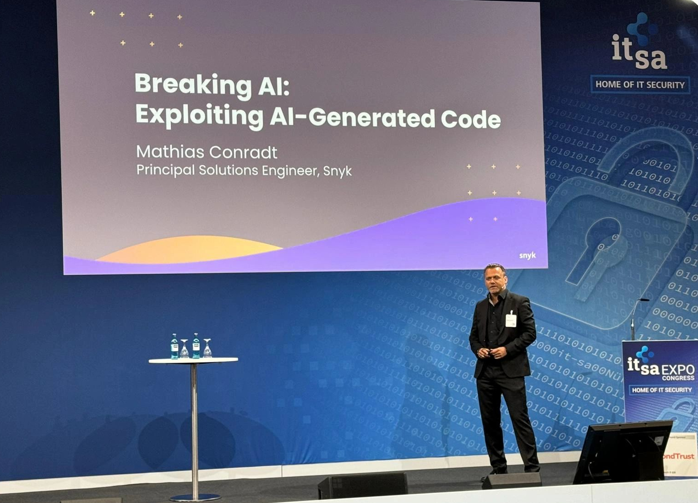

EVENTS & TALKS
SECURITY TALKS
Below is a list of talks I held at industry events, ordered by topic and date (desc).
Securing Application Development in the Age of AI
◦ Snyk/Deloitte Webinar, 07.11.2024, Remote
Secure Development in the Public Sector
◦ Snyk/AWS/Deloitte Webinar, 05.11.2024, Remote
Secure Container Workloads In Build-Time With Snyk
◦ AWS Immersion Day, 23.05.2024, Remote
How Axel Springer NMT Automated Dev-First Security in the SDLC
◦ AWS Summit Berlin, 15.05.2024, Berlin/Germany
AI Hallucinations and Manipulation: Exploiting AI-Generated Code
◦ IT-SA, 23.10.2024, Nuremberg/Germany
◦ Almato DevCon, 07.06.2024, Pliezhausen/Germany
◦ DevSecCon, 06.12.2023, Munich/Germany
The State of Open Source Security
◦ DevSecCon Afterwork, 30.03.2023, Hamburg/Germany
Stranger Danger - Live Hacking Session
◦ WebDevBBQ, 21.03.2023, Stuttgart/Germany
◦ Heise devSec(), 05.10.2021, Remote
◦ DevSecCon Germany Meetup, 19.03.2021, Remote
◦ Arrow University, 04.03.2021, Remote
Enterprise Security - Securing Cloud-Native Applications at Scale
◦ it-sa Expo, 11.10.2023, Nuremberg/Germany
◦ Almato DevCon, 16.06.2023, Pliezhausen/Germany
◦ DevSecCon Zurich, 06.06.2023, Zurich/Switzerland
◦ DevOps Stuttgart, 21.03.2023, Stuttgart/Germany
◦ CSX2021, 14.04.2021, Remote
◦ CloudNative Conference, 28.01.2021, Remote
◦ eCrime & Cybersecurity DACH Conference, 14.01.2021, Remote
User Profiling through Open Source Intelligence (OSINT)
◦ DevSecCon Road Trip Germany, 17.09.2021
Balancing UX and Security in CIAM
◦ Computerwoche, 15.09.2020, Remote
◦ PwC #IdentityUncovered, 23.07.2020, Remote
The Evolution of IAM
◦ iSMG Virtual Cybersecurity Summit: IAM, 23.06.2020, Remote
◦ KuppingerCole “Identity Fabrics”, 12.05.2020, Remote
Anatomy of Credential Stuffing Attacks
◦ IDM Europe, 12.03.2020, Frankfurt/Germany
User Profiling through Open Source Intelligence (OSINT)
◦ Identity & Security Meetup, 26.09.2019, Stuttgart/Germany
◦ Hamburg Cybersecurity Awareness Meetup, 24.10.2019, Hamburg/Germany
Introduction to the OAuth2 Device Flow
◦ Identity & Security Meetup, 06.06.2019, Frankfurt/Germany
Authentication and Authorization in SPAs using OAuth2/OIDC
◦ BSides Stuttgart, 26.05.2019, Stuttgart/Germany
Identity and Access Management Made Simple
◦ CodeDoor Stuttgart, 12.06.2019, Stuttgart/Germany
◦ WebDevBBQ Meetup Stuttgart, 09.05.2019, Stuttgart/Germany
◦ React Meetup Karlsruhe, 02.04.2019, Karlsruhe/Germany
◦ Angular Meetup Stuttgart, 28.03.2019, Stuttgart/Germany
MEETUP ORGANIZER
DEVSECCON GERMANY (2021-2024)
While working at Snyk, I initiated and led the DevSecCon Germany chapter. Between 2021-2023, I have hosted 20 virtual meetups, see https://www.meetup.com/devseccon-germany/events/past/. In 2024, I handed the DevSecCon Germany chapter over the my colleague Sebastian Roth (Snyk).DevSecCon is a safe and inclusive space for developers, operations, and security practitioners of all levels to make friends and improve their craft.
We bring together the brightest minds in DevSecOps to learn, discuss, and build the future of developer security.